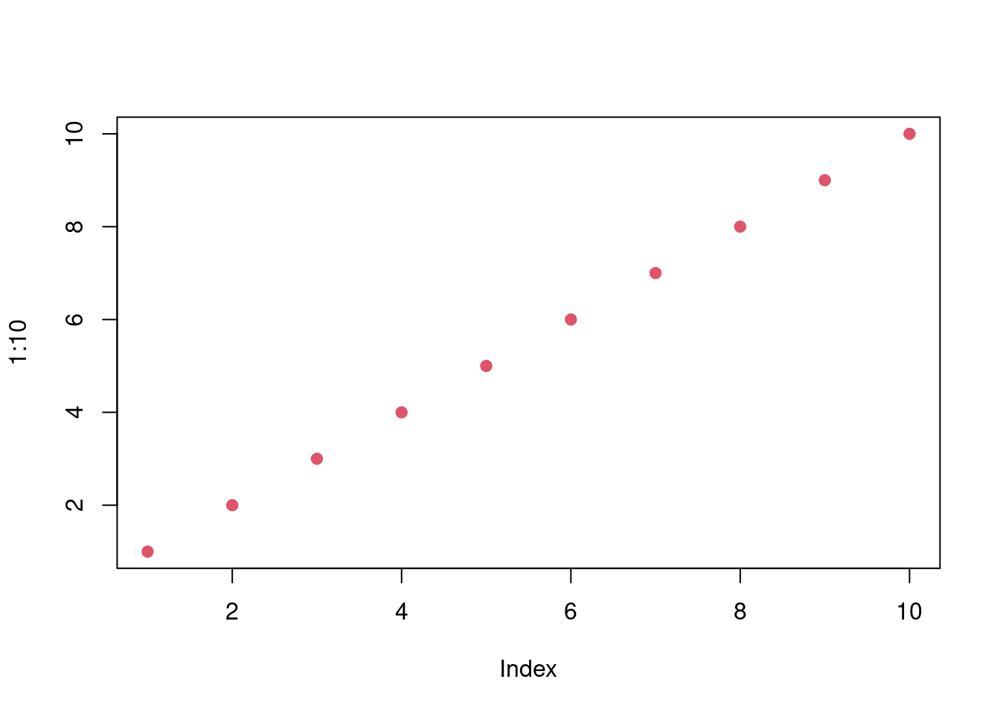

4.6 Survival Analysis
Thi sis a test. Great.
The probability of survival until time \(t\) or the probability that the event will occurr after time \(t\) is defined as: \[\begin{equation} S(t) = P(T > t) = 1 - F(t) \end{equation}\]
The hazard (instantaneous risk) \[\begin{equation} h(t) = P(t < T \leq t + t\delta \mid T > t) = \frac{f(t)}{S(t)} \end{equation}\]
Notice that it is enough to know one of the terms \(f(t), S(t), h(t)\) to derive the remaining terms:
- \(f(t)\): \(S(t) = \int_{t}^{\infty}f(x)dx\); \(h(t) = \frac{f(t)}{\int_{t}^{\infty}f(x)dx}\)
- \(S(t)\): \(f(t) = \frac{dS(t)}{dt}\); \(h(t) = \frac{S'(t)}{S(t)} = -\frac{dlog(S(t))}{dt}\)
- \(h(t)\): \(S(t) = exp\left(\int_0^t h(u)du\right)\); \(f(t) = \frac{ d\left(1-exp\left(\int_0^t h(u)du\right)\right)}{dt}\)
This type of analysis assumes a hazard function that defines the probability of the occurrence of an event. En general it is called survival because of the interest on. I should not neet to update.
This is strange because I can not see the file.
4.7 sub1
4.8 sub2
Let’s do a plot. This is a simpl plot for subsection 2. I do not understand what happen, but it is working well. Entr is amazing, so great!

What is the problem then?
Nice.
Let’s start with book. What is the issue? Again the same problem. If this is a new chapter it works fine. I can see that. However there is a problem for a new file inside a chapter.
Survival analysis is the study of the time until the occurrence of an event. There is something weird here because this is not getting updated. Now it looks fine. What was the problem? Now?